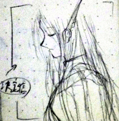
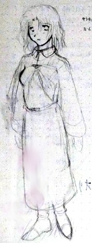
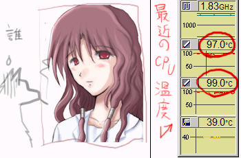

シルバーセカンド開発日誌
■
2010-08-10 (火) ウディコン開始＋アプリ化▼※リンク先の記事は、時間経過で消失する可能性があります。

ということで、
第二回 WOLF RPGエディターコンテスト、ついに開催です！
Yahooニュースにも記事が載ったとのことで、目から飛び出そうになりました。何かが。
ちなみにこの元記事は、【Impress Watch 窓の杜さんの記事】(アーカイブ)です。
いつも取り上げて下さって本当にありがとうございます。
作品は、8/15まで募集中です。 早く次のゲーム作ってよ！って方にも、
きっとご満足いただける良作が勢揃いですので、バンバン遊んでください！
応募作品は、届いたその日からプレイ可能です。
よかったら一般投票もお願いします、と言いたいところですが、
こちらは本当にゲームが好きな人だけで大丈夫ですよ。
とりあえず目に付いたのから、ぜひ遊んでみてくださいね。
【携帯アプリでシルフェイド幻想譚が遊べる（かも？）】
あと、ボソボソっとトップの開発状況につぶやいていましたが、
大阪から東京まで出張してきた甲斐もあって、SilverSecond（※このサイト）の
フリー作品が携帯アプリに移植される可能性が濃厚になりました。
移植対象は、ドコモ、au、SoftBankの携帯アプリですが、
ドコモは審査が厳しいらしいので、まだ断言できない状況です。
そもそも私が粗相をして話がパーにならないか心配ですが！
で、それに伴い、移植用のデータ整理も今月中に行う必要が出てきたので、
忙しさの濃度が激しく上昇中です。ついでに、新しい勤め先のアレコレとか
ウディコンとか、もう用事の四面楚歌やでえ！
って、実際、冗談言ってるヒマじゃないんですが、まあ楽しい8月になりそうです。
【何もないのもアレなので、今回のスクリーンショット】

ピンクツインドリルの人は、シル学FAEから参戦のモモセ フジヨシさんです。
今回はサブキャラのリーダー格として出演させていただいております。
以下はいただいたコメントの抜粋です。
＞日記内容と関係ないですけど、携帯でSilverSecond作品が .
＞プレイ出来るですってぇぇぇぇ!? それが実現したら物凄いスピードで
＞ダウンロードしますよ！原作所持してても欲しい！寧ろ布教します！
布教ってうち宗教なんですか！？ ただ、ハマるかどうかは
その人次第なので、くれぐれも無理に押し付けたりしないでくださいね！
合わない人も、きっと多いだろうなと私は認識しています。
＞MODといえば、汁帳みたいに自作シナリオを作るためのものから、 .
＞Oblivionみたいにシステム改造やモンスター、地形を作ったり、 .
＞自作装備を作ったり、 WarCraftIIIみたいにゲームをRTSから .
＞タワーディフェンス、RPG、ARPG、TPSなどに変えちゃったり .
＞するものも有りますよね。（まあWC3はMODというよりはMAPですが）.
＞ｼﾙﾌｪｲﾄﾞ学院物語に適用できるMODはどの程度になるんでしょうか？
ジャンルごと変わるかというと、そこまではできませんね。
ベースシステムの改造はできませんけれど、イベントやアイテムを使うことで
ダイアログを表示してアイテム合成したりとか、そういうのならムリヤリ作れます。
それでも、一応育成シミュレーションのワクがベースで、
イベントは分岐やら戦闘やら何やらいっぱい入れられるので、
「シル学用スクリプトや設定・画像差し替えでできること」までなら
ある意味、何でもできると言えます。
たとえば、マップやイベント発生地点を差し替えたりして、
幻想譚ベースの世界観で繰り広げられる育成シミュとかなら、作れるんです。
また、最後の裏技として、ウディタ用のコモンイベントを読み込んで実行することも
できたりします。メイン部分と別に、ミニゲーム付けるくらいなら楽ちん？
＞twitterでウディタ＆ウディコンのハッシュタグがあると便利では？
実はこっそりありまして、ウディタは「#woditor 」。
ウディコンは 「 #wodicon 」です！
ウディコンの方は、ハッシュタグを使うとコンテストトップページにも表示されます。
よかったら使ってみてください。
(2023/07/13追記:TwitterのAPI変更でウディコントップに表示されなくなりました)
＞先日ふんどしを買ってみましたがなかなか良い履き心地ですね。.
＞そんな我が家のパンツはもう半分ふんｄ（ｒｙ .
魅惑のふんどしワールドへようこそ！
これからも、どんどん布教していきたいですね！！！
ふんどし教を日本に広めましょう！！ ハァハァ。 ■
2010-04-27 (火) 我が祖国、ニッポンへ (旅行記）▼ということで旅先から帰って参りました。
今になってもかなりハードだったのか体がボロボロです。
ゆっくり休めていきたいと思います。
向こうの国にいたときに進んだ作業は、ウディタのバグ修正と、
シル学考古学編のダンジョンネタを考えていた程度です。
以下は旅先の感想です！
まずは何枚かお写真を。
分かる人には、これを見て滞在していた国が分かるかも？
左は現地のアイスランド噴火のニュースです。きっと言語で分かりますね。

右はいくつめかのホテルで見つけたWi-Fiの案内。
ウヒョー来た－！と思って急いでフロントまで走りました。
言葉が通じなくったって何とかなるさ！ いやまあ、
そのときはたまたまフロントの人が日本語ちょびっと話せましたけれど。
説明文を撮った写真見せて「Wi-Fi！Wi-Fi！」って言ってました。私はサルか。
日本では、14日に起きたアイスランド噴火についてどういった報道が
なされていたのか全然分かりませんが、今日ニュース見た感じでは
まったく話題になっていなかったのがちょっと寂しかったです。
こっちは出国直前（24日）まで毎日ヘッドラインに挙がってたのに！
そりゃまあ、BBCニュースとかだと、アイスランド噴火関係と、
ポーランドの偉い人の国葬（すでに、ものすごく昔に思える！）と、
オバマさんが銀行システムどうこうしたくらいしか
主なニュースはありませんけれど！！（国際的な話題しか載せられない的な意味で）
あと、面白かったこともう一点。

JAL航空機の機内には座席一つずつにモニターが付いてて、
アバターやNINEなんかの割と最新の映画まで見られたり
簡単なゲームまでできたりして、凄かったですよ。
飲み物は好きに飲めるし、日本語は通じるし、もう最高！
ってあんまり言うとJALの回し者みたいに見えるかもしれないですけれど、
何はともあれ、時代って進歩してるんだなあ、と感じました。
これから航空機内を描くときは、各お座席にモニターを取り付けようと思います。

そうそう。帰国と言えば、「帰ったら日本食を食べたいな……」と思って
ヨーロッパからJALの航空機に乗ったんですけれど、そこで思いがけないことが！
なんと機内食で、塩鮭とご飯の盛り合わせ、そうめん、さらには
コップにみそ汁という8割方和食メニューが出てきて、
JALの中の人の優しさに泣いてしまいそうでした。
紙コップで、二週間ぶりのみそ汁、おいしかった……！
ちなみに聞こえてくる声を耳にした限りでは、
みそ汁は普段のサービスには入ってないみたいでした。
これらの和メニューは、和食が恋しかったであろう日本人のために、
がんばって揃えてくれたんだそうです。
にしても、こんなにサービスがいいのに、
JALが猛赤字ってかわいそうだなあ。というか赤字の原因は、
この良すぎるサービスにある気もしますけれど。
外国の人も結構ぎっしりだったので、利益が取れない路線を減らせば
赤字が解消されるって主張するのも分かります。そりゃ人気出ますよ。
あれは思い出補正抜きでも、もう一度乗ってもいいと思えました。
予定より長い旅になってしまいましたが、
なんだかんだいって、日本に帰ってこられて良かったです。
帰ってみると日本の何もかもが素晴らしく見える！水の量が半端ないんですよ日本！
「湯水のように」なんて表現は、まさに日本の特権だなあと感じました。
何が言いたいかって、湯船でお風呂入れるのが嬉しかったんです。
▼追記を開く▼以下はコメント返信です。皆さまにはどうもご心配お掛けしました。
＞遅くなりましたがシルアン先日無事入稿できました＆ご紹介有難うございました！
＞結構お問い合わせ頂くなど反響あるみたいです。ひとまずコミ1で売ってきます！
シルアンの主催者様からです。がんばってください！
あとでこっそり買います！
＞（シルドラ0を）フルボイスにしたかったと言ってましたがフリーゲーム界で
＞それはやめておいた方がいいんじゃないですかね。本当のプロの声優なら
＞凄いですけどアマチュア界だとうまい人でも粗があるし～（略）
もし可能なら、アマチュアでも安定した声能力をお持ちの方を探しているんですが、
きっと難しいんだろうなあ……と躊躇する気持ちはぬぐえません。
手伝って下さる方がイメージにバッチリヒットしそうなら、
いくらでも参加していただきたいくらいですけれど！謝礼も出ますよ。
ていうかネット声優さんって探して見つかるものなのか分かりませんけれど。
むしろ手伝ってくださりそうな声優さんに合わせてキャラクター作った方が早いかも。
＞おかえり！ヽ(ﾟ∀ﾟ)ﾉご無事で何より。ドイツでもビールは
＞水より安いと聞くし世界の価格基準がわからん、みんな水飲まないのか
昔、ヨーロッパ周辺ではある理由（石灰が多いとかだったかな）が原因で
水が直接飲めなくて、代わりにビールを飲料として使っていた時代があるそうです。
その時代は子供までビール飲んでたんですって。
おかげで、向こうのビールは飲みやすいのが多いみたいですよ、ハイネケンとか。
紅茶も同じ理由で流行したんじゃなかったかな。
とりあえず、水をそのまま飲む文化じゃないみたいです。
＞さすがレストールやエシュターやシシトの生みの親、
＞並のトラブルには巻き込まれませんな。
代わったことをすると必ず何かに巻き込まれます。
＞（海外で困った体験色々）
様々な情報ありがとうございます！
おかげさまで、向こうにいる間も励みになりました。
言葉が通じないのは大変ですよね。
地図を初めとする「図」や書類関連は本当に役に立ちました。
＞人生の良い経験になりそうですね。
＞少しだけうらやましい・・・ではなくて大変ですね。
噴火に巻き込まれて予定外の滞在をするのはある意味で？楽しかったです。
ホテル代が日々なくなっていく恐怖……！
今回は自然災害が原因だったので、せっかく旅行保険に契約したのに、
補償が一銭も降りませんでした。トホホ－。
＞まさか前回の日誌の「リアル事情が～」は
＞これを予見してのことだったんですか！？
普通にちょっと旅行行って帰ってくるはずだったんですけど！
こっそり行くつもりが、このまま死んだと思われると困るので、
結局カミングアウトしてしまいました。
＞お土産よろしくお願いします！
ええーこんな状況でおみやげー！？
上の写真とみやげ話で勘弁して下さい。
＞私も研修でフランスへ行った時に水の値段に驚きました。
＞自販機で（当時）１ユーロ≒２００円という日本の倍…orz
足止めされてた国だと、スーパーで1.5リットルの
evian（ミネラル水）が60セントでした。
今なら日本円にして70円くらいでしょうか。日本より安かったです。
お店とか自販機は、とにかく高いですね！
＞今欧州にいたのか、ウルフさんｗｗおいしすぎるだろｗ
おいしいとかそんなこと言ってられる状況じゃないｗｗｗ
といいつつ、半分これはおいしいと思ってました。
リアル幻想譚アルバート状態です。おかげさまで、
これからはもっとリアルに、言葉の通じない世界を演出できそうです。
＞たくましさと、何はともあれトイレの話題を持ち出す貴方の
＞流石っぷりに感動しました。一刻も早く公衆トイレ無料の国に
＞帰れるようお祈りします。
おかげさまで帰って来られました。トイレ最高！！
でも向こうの国でも、三越デパートのトイレはタダでした。
さすが日系企業は違うぜーー！！とか内心思ってました。
お米もおいしいですしね。もう最高。日本大好きだ！■
2010-04-21 (水) 近況報告 アイスランド噴火▼
今の内にここでご報告させていただきます。
私事で何ですが、現在、私は14日のアイスランドの噴火の影響により、
いまだに日本に帰れない状況です。
しばらく開発や更新その他諸々が停滞することが予想されますので、
シルフェイド学院物語８月公開予定を９月に書き換える必要が
出てきそうな予感がしていますが、いちおう、生きてますので
それだけご連絡させていただきます。
現状は現状として楽しんでいますので、その点は御心配なく。
言葉がまったく通じないのと読めないのさえ除けば、割と何とかなってます。
お金さえ渡せば言葉が分からなくてもモノが買える貨幣制度を
考えた人は天才だなとか思っています。
というかですね、こんなヤバい状況、人生でもなかなか起きませんよ！
大人になってほぼ初めての勢いで海外に出たと思ったらこれなので、
色んな意味でウンが付いてます。でも近所の公衆トイレは有料です。
どうやら、一回40セント（ユーロで）が相場のようです。
トイレが無料だった日本にいた頃は幸せだったなあ、
と祖国の生活の幸せさを噛みしめています。
あ、あとレストランの水がコーラより高いです。うおおおお！！■
2010-04-02 (金) エイプリルフール ウディタDS発売決定(!?)＆シルドラゼロ▼疲れたー！でも終わって良かった－！
ということで、エイプリルフールはお楽しみいただけたでしょうか？
今回のネタは、意表を突いて二本立て！
数日前から「４／１に新作発表！」なんて言ってた点については、
まったくもって嘘を言っておりませぬ！
で、今回の内容についてですが、
一個目は「WOLF RPGエディターDS発売決定のお知らせ」

二個目は「シルフドラグーンゼロ 公開のお知らせ」

でした。後者は本物です。純粋なウディタ本来の機能だけで開発したもので、
こんなのも作れるんだよー！ という一例になればなと思っています。
（※一部Game.exeのバグ修正したところがありますが、機能的にはVer1.16相当です）
たくさんのご感想、誠にありがとうございました。
【今回、作業していて思ったこと】
ウディタDSサイトは結構がんばりましたよ！
こんなの欲しいなあ、と思いながら作ってたらてんこ盛りになりました。
こんなに機能放り込んだら絶対バグまみれになります。
あと自分で描いておいて何ですが、最後のモノリスフィアDSなんかは、
あのままのデザインでもけっこう遊べそうな気がしています。
むしろタッチペンの方が、マウスより手が痛くならなくていいかも。
一方のシルフドラグーンゼロは今回、シル学開発の脇で、
透子さんに立ち絵を描いていただいたりもして、
開発にかける時間をキリキリまで詰めながら作ったものですが、
思っていた以上に楽しんでいただけているようで何よりです！
短い時間でサクッと作ろうと思って最小規模を意識したものは、
コンセプトが一貫してて分かりやすいかもしれませんね。
中身が中身ですので、あまり議論する部分はないかもしれませんが、
さっぱり遊んですっきり終われるのも、
一つくらいあっていいかなと思っています。
また、短編だからこそ、実験的に色々試してみたかったところもあります。
キャラクターを全部、他の人に描いていただいたりとか、
物語面も、大好きでいながら（いやむしろ好きだからこそ）、
これまでまったく手を付けてなかった「宇宙SF系」だったりするような具合に、
個人的に思い切ってトライした部分が色々あるんですよ。
エセSF設定くらいなら、ようやくそれっぽく演出し始められそうな感触でした。
ちなみに個人的なこだわりどころなんですが、ゲーム内設定と
物語をリンクさせることは、毎回微妙に努力してるつもりです。
今回は設定も細かいところまで凝ってますよ！たぶん。
読むヒマは、あまり、ありませんけれどね。
最後の演出は、ご指摘のあった通り、某探査機への愛です。
まあ、にわかファンなんですけどね。
以下は、いただいた拍手コメントです。 ▼追記を開く▼＞Vector Awardでウディタが３位でしたね。おめでとうございます。
あ、ご報告し忘れてましたが、そうなんです！
まさかの「3位」にWOLF REGエディターが！
Vector Award 結果発表(ｱｰｶｲﾌﾞ)
これも皆さまのおかげです、本当にありがとうございました！
＞ＤＳでウディタが出ると聞いて人胆道ＤＳ買いました！
＞いまから超楽しみっス！
あーどこも売り切れでなかなか買えないんですよねーNintandoDS。
＞「久々コメントです。エイプリルフールネタ、見事に騙されましたが（略）」
＞「にんたんどうでぃーえす！「残念なお知らせ」にも超ふきましたぶふぅ！(略)」
＞「べべべべつに、ちょっとウディタDSに期待しちゃったとかそんなんじゃｎ(ry」
＞「ΩΩ Ω＜な、なんだってー！？しかしウルフさん今回のエイプリールフール
＞ ネタも作りこみが凄いですね、つい本気で信じちゃうところでした。（略）」
ウディタDSエイプリルフール企画に対して、たくさんのコメントいただきました。
楽しんでいただけたようで嬉しい限りです。でもウディタDSに関しては、
後から修正できないソフトはあんまり作りたくないなあ、と思ってます。
きっとバグいっぱい出てえらいことになりますよ。
もう開発ツールをゼロから作るのはやりたくないです、本当にバグなくせない。
＞日誌の更新が遅いなー、と思っていたのですが。
＞やはり4月1日用のページ作成に時間使ってたのですか？
はい、使ってました。どうもすみません。
＞ズコー（ｒｙ
ちょうどオチが付いたので、AAを探しておきました。綺麗に出てるでしょうか。
∧∧
ヽ(･ω･)/ ｽﾞｺｰ
＼(.＼ ノ
､ﾊ,,､ ￣
￣
|
引っ越しのときに持ち帰ったパソコンから続々とアリが出てきたウルフです。
茶色い2mmくらいのアリが出てきたのですが、どうやらそいつは
パソコンの中に巣を作ったりするっぽい奴らでかなりヤバいらしいので、
慌てて防虫剤作戦を実行しました。でも駆除できたかどうかは不明。
ということで黒歴史公開パート2！
今回は本来モノリスフィア開発のタイミングで
作る（かもしれない）はずだった
マウス操作入りのSF横スクロールシューティングゲーム、
「シルフドラグーン・ニュー」の設定資料です。
女の子キャラ二人を紹介してますが、
実は上官がアルバート（グラサン仕様）。
なんとも妙な配役です。
【シルフドラグーン・ニュー】

【サラ】
主人公で、とある航宙戦闘機部隊のエースパイロットです。
彼女の星では、完全に管理された出産制限により、人権保有者が
死亡率の高い任務に参加するためには毎回大量の書類の用意や
手続きをしなければならなくなってしまっています。
そこでお手軽な戦闘要員を確保するために、法の抜け穴的に
「人権を持たない人型実験生物」が多く作られました。
彼女はその中のうち、特に戦闘に適性があった者の一人です。
視覚を持たない代わりに、それ以外の
感覚器・思考能力が極限まで引き上げられています。
性格は冷淡で、あくまで兵器の1パーツとして
管理されている己の立場をわきまえた行動・発言をします。
「消耗品」である彼女は、常に最前線での戦闘に
参加せざるをえなかったり、作戦とあらば
単機で敵部隊を強襲しなければならないような宿命を背負っています。
まさにシューティングゲームの主人公にふさわしい役回り。
耳に着けてるのはソナー機能付きの通信機です。目の代わり。
戦闘機は脳直結型デバイスを使用して操作するので、
目が見えないことはペナルティになりません。

| 【ユーリ】（名前は仮）
サラと同じ部隊で、珍しく人権を
持った航宙戦闘機のパイロットです。
優しい性格から来る躊躇が元で、戦果を
上げられない自分に悩みを抱えています。
しかし凄まじいまでの生存性を評価されて、
後に補給機のパイロットに抜擢、激戦区で
戦うサラのサポートに回ることになります。
同じ部屋のサラと友達になろうとします。
空（宇宙）を飛ぶことが何よりも大好き。
シル見でいうところのマイアに似てる。
|
という感じです。
密かにボツになったネタはこのほかにも色々あります。
いつか作りたいなあ、と思って色々ストックしているので、
もしかしたら今日公開したこのネタもそのうち使うかもしれません。
とりあえず今はシルフェイド学院物語、その後シル見ですけどね！
以下は気になった拍手コメント返信です。 ▼追記を開く▼＞今回はアルバートのヒゲでおもわずふいてしまいました、
＞もっとあるんですか？みたいです、作るのがんばってくださいｗ
残念ながらネタバートはあれくらいでした。
＞あと先生！ 「クリフ迷宮録」の英語版タイトルって決まってますかー！？
＞（シルフェイド見聞録＝Records of Silfadeみたいな） （略）
ということで公式として決めたことを忘れないよう、
ここにも書いておきます。
（先日あわてて考えた）クリフ迷宮録の英語タイトルは
「The Abyss Story of Cliff」です。
「クリフの深淵の物語」とも言うし、「クリフのどん底物語」とも言う。
＞2001年前の資料紀元8年とは……構想10年とか目じゃないっすね！
間違えて2001年「前」の資料になっていました！！ 何歳なの自分！
でも案外、古代の文献には（当時の）萌えキャラが書いてあったりするかも
しれないですよ！私たちは真面目な文献として見てますけれど、
エジプトの壁画や、日本の土偶（今風に言うとフィギュアですね）が
単純に萌えを追求した一部のオタクのものだったらどうするんですか！
1000年後の人類には日本のアニメが真面目に分析されてるかも。
そう思うと歴史って不思議なもんです。
＞＞今はもう珍しくなくない「ゲロイン」ですが
＞いや、全然珍しい……つーかシル見以外で見たことないですよ！
＞ところでシル見って完結するんですか？
ゲロイン、名前は出ませんが、もうけっこう出てきてると
思うんですけれどねえ、どうなんでしょう？
シル見は当然完結しますよ！！
そしたら次はシルフェイド探求紀行へ続きます。
シルフェイド見聞録は、物語の序曲に過ぎないのです！
とかオオボラぶっこいてみる。
でも探求紀行に繋げようとしてるのは本当です。
＞追加のシナリオが可能だと伺いましたが、追加の部を増やすことは
＞可能でしょうか？引継ぎに倉庫内容引継ぎとかあったら、武術部とかの
＞ほかに生産部とか作ってみたいです。 一心不乱の生産を！
おお、なくなった工学研究部を作っていただけますか！
追加の部（クラス）も当然増やせますし、
トーテムも増やすことが可能ですよ。【10/8の内容】
ただいまリアル引っ越し作業の真っ最中で、
4日に渡って朝起きてから寝るまで延々と肉体労働の日々でした。
もうそろそろ終わります。さらば広島の家よ、8年間ありがとう。
で、それはそうと8年以上前に書いたヤバい黒歴史ノートとか設定画とか
色々出てきたので、気が向いたら公開するかもしれません。
いやーまさか授業中に友達と
やり取りしたノートまで出てくるとは思いませんでした。
あの頃はアホだったと思う反面、文の書き方の基本も知らなかったので
かえってぶっ飛んでた気がします。
ちなみにレジェレスがその黒歴史の集大成。
当時の私は、創作的な意味においてまちがいなく不良だと思いました。
世の中に逆行したい若さというか。
今はその気持ちをだいぶ失ってしまったので、
もっと反骨精神を養いたいなあ、という希望もあります。
【ここから10/11の内容】
ということでようやく引っ越しが終わって
穏やかな住まいに戻って参りました。
黒歴史ノート集は某クロネコさんに運んでもらってる最中なので
まだ届いていませんが、現地で撮影した資料がいくつかあるので大公開！
＜初期原案シーナ ラフ＞ 2001年前頃の資料

シルフェイド見聞録用にデザインしていた最中のシーナです。
「病気ゆえ、あまり人と関わるつもりのないキャラクター」
としての初期案。
9割方、今のシーナと同じですが、初期案では左の顔を
基本の表情にしようと考えていたので、それに比べると、
今のバージョンのはずいぶん愛想がいい顔になっていますね。
今のバージョンは「先も短いから前向きに生きよう」
と達観してるバージョンです。
ただし、寂しい表情でなくなった代わりにゲ■機能が搭載されました。
今はもう珍しくなくない「ゲロイン」ですが、当時はいっぱい考えて考えて、
どうすれば人の印象に残るキャラクターになるかって必死だったんですよ。
＜初期原案幻想譚アルバート ラフ＞ 2003年頃の資料

幻想譚になって、「大人になったアルバート」として
登場するときの顔グラフィックをどうするか考えてたときのラフです。
「なんでゲッソリしてんの」とか「何このヒゲ」とか、見た瞬間は
ちょっと面白かったのでデジカメで撮ってました。
残りも少しあるんですが、それはまた次回で！
以下は気になった拍手コメントの返信です。 ▼追記を開く▼＞>>データベースを自由に組み替えできる何でもツクールが(ry
＞古い記事からの引用ですが、データベースはしかたないとして、
＞アクションツクールなどで「なんでもツクール」の試みがあるのは
＞確かみたいですね。（中略）とはいえ、最近ではGameMaker7の
＞ようなある種「なんでもツクール」的なプログラムが
＞出てきているみたいですが…
結局は、変数操作とグラフィック表示とサウンドとキー入力受け付けさえ
実装できれば万能ツクールになるわけですから、あとはその上に
どうやって開発を楽にする機能を入れるかが
ツールの差なんだろうなと思ってます。
ツクールなら初心者向けに特化した分かりやすい機能が満載ですし、
ウディタなら、プログラムを打つ代わりに
イベントコマンドで処理することで
エラーの発生を減らすことと、自作データベースによる自由なデータ管理と
データ追加ができるという部分をウリにしています。
＞黄金の…右！つか大概の服で隠れるであろう胸の谷間まで
＞描写されている事に露出の多い衣装が存在するのかと
＞ワクワクテカテカせざるを得ないですねハアハア！
おっ、いい読み！余裕があればバニー服とか水着も入れる予定です。
＞見落としていたらすいません。
＞このゲームはいつ頃完成のご予定でしょうか？
＞日記読んでいると、やりたくてやりたくて凄まじく辛いのですがｗ
どんどん完成予定時期が伸びてるので、もう正確な時期が何とも言えません。
可能な限り面白いものをお届けしたいと思いますので、ご期待下さい！
じっくりコトコト煮込んでゆっくり作るなら、
半年後くらいかなあと思います。
＞マッハパンチならぬマッパパンチということですね！！
座布団一枚！
＞シル学、すごい進んでますね～完全楽しみです！エイプリルフールの
＞嘘企画だったのが嘘みたいですねところで、あの頃のイベントって
＞実在するんですか？アルバートが「俺と合体しないと世界が滅びる！」
＞とか言ってたやつとかもしなかったら是非作っていただけませんか！？
＞すごくやってみたいです！
え、が、合体！？
「大変だ！俺を愛さないと世界が滅亡する！」くらいなら
言ってますが合体を求めるほど直接的なアルバート君は
今のところありません！！！
＞乳揺れはないの？
ウリユが乳揺れしたらガッカリする方もたくさんおられそうなので、
とりあえずこんな中途半端なサイズとなっております。
いちおうこれが女性キャラの統一画像ですから。
（キャラごとに変えることも可能）
＞グラフィック開発お疲れ様です。ところでアニメーションの女性、
＞「確実に手が伸びてますね（笑）」。 （略）
実はこのくらい手が長くないと敵に当たらないんですよ！
きっとモーション全体を完璧なものにしようとすると、
きっとそれだけで一ヶ月以上かかるので、その分の時間は
中身の作成にあてさせていただこうと思っています。
もっと上手いの作れるぜてやんでえ！って方はぜひMODで！
凄い人がいたら正式に今後の開発にスカウトさせていただきたい勢い。
＞グラフィックMODに是非参加させて頂きますよ～！ 本当にこういう機能を
＞いままでのゲームに待っていたので、すごく楽しみです！！
ありがとうございます！まだまだヘチョいグラフィックですが、
公開後にガンガン綺麗にしてやってください！■
2009-05-31 (日) 海外アマチュアゲームの話▼海外進出の話題ですが、おかげさまで皆さまから
多くのご意見、非常に参考になる情報を頂けました。
本当にありがとうございます！ 全ては紹介しきれませんが、
今回はそのうちの一部でも紹介させていただきたく思います。
で、肝心の、最終目標とするアマチュアゲーム的なコンテストですが、
いただいた情報により、大規模そうなのが見つかりました。
その名もIndependent Games Festivalです。
独立系（要はインディ）ゲーム祭り。
主部門は、参加費95＄（1万円）で賞金総額5万＄（500万円）！
世界中からカモン！って言ってるので、
日本人の私でも余裕で参加できます。
最近の参加数は2008年173本、2007年141本、2006年118本！多っ！
でもまだオフィシャルルール全部読んでないので詳細が分かりません、
英語読むの遅いんですよ。え、10部もゲームデータのCD送るの！？
必要なら3Dメガネやグラフィックボードも添付してねだと！？
で、評価は、技術面/視覚面/オーディオ面/革新さ/一般票で行われる？
もう「？」だらけですが、とりあえず評価は主にコンパクみたいな
審査員方式な感じでしょうか。
決勝出場者は指定の時間、展示して説明してねとか書いてある気がするけど
これが非常に大きな壁！
展示はいくらでも体験してますけど英語は分からない！
英語の説明パネル書いて「リィドヒア！（これ読め！）」でいいのかな。
しかも投稿作品は、どれもこれもクオリティとか発想力が半端ねえですよ！
これが世界！ 2011年内に出して賞取りたいとか言いましたけど、
賞の一つでも取るつもりならこんな期間ではまず無理そうです。
というか期間の問題じゃなくて「発想力」が足りてない！
しかも英語まみれですよ周りは。ワタシ英語がぜんぜんしゃべれません。
でも、かなり恐いけどこれを最終目標にして頑張りたいと思います。
しかしもう少し段階点にステップアップしていった方がいい気もします。
たぶん順当に行けば決勝戦なんて残らないで悔しがるフラグのはずだから、
展示で英語どうしようとか考える必要ないよ！うん！
その前にゲームを翻訳できないから！ そこが問題だから！
＞（URL/ｱｰｶｲﾌﾞ） この記事などから考えると海外の同人ゲームは
＞「independent game」になるみたいですね。
上記で述べていたのは、このニュース情報が元です。
貴重な情報、ありがとうございます！
でもたった5日で作ったゲームが賞取ったとか、どんだけですか！
受賞作品の傾向もそうですが、アイデアという土俵での勝負が
もう6割以上になりつつある気がします。
が、ボリュームがそこまで要らないのなら、それはそれでチャンス有りです。
＞こんにちは！海外のコンテストって日本とは評価のポイントが
＞違うそうですから大変そうですね…！向こうのセンスにあった
＞ゲームを作られるという事は、シルフェイドはもう作らないの
＞でしょうか？ちょっと心配しています。
私は私のセンスでゲーム作るしかないし、無理に空気読むのは
アマチュアらしくないので、海外でフリー公開する分には
ひとまずシルフェイド系を英語化することになると思います。
海外コンテスト用作品はそれなりの戦略を練りますけれど、
コンテストに出すなら、それはいつものことですしね。
海外向けにグラフィックとシナリオだけ変えたモノリスフィアを
作ってもいいと思ってます。超ムキムキなアメリカンコミック風モノリス様が
「Craaaaaash!!」とか言いながら敵を倒す展開。
（日本人から見た間違ったアメリカ観）
＞海外は日本と違いゲームのMODが盛んですから、どうしてもアマチュアゲームが
＞下火な印象です。あと、それの影響か、アマチュアゲームも一人で何でも作るって
＞いうより大人数での役割分担がされている印象でもあります。
＞あと、それの影響か、アマチュアゲームも一人で何でも作るっていうより大人数での
＞役割分担がされている印象でもあります。私も昔MODに参加していたんですが、
＞50人くらいいるチームの一員で、本当に自分に任された仕事しかしませんでしたね。
＞しかも、モチベーションもForumとかで毎日応援コメもらったり、他のチームの成果を
＞見て燃えたり、他チームのデバッグの為に期日とかもあり、ちゃんと保たれました。
＞当然、質もその分野の専門家（アマチュアですけど）しかいないので、
＞自然と高くなっています。一人でそれに立ち向かうのはだいぶ大変だと思いますよ。
＞まぁ、がんばってください。応援しております。
生のご意見、誠にありがとうございます！
これは他の皆さんにも参考になる部分が多い情報だと思います。
ちなみにMODというのは、元のゲームに
ユーザが作ったデータやスクリプトを
入れたり換えたりしたデータのことで、
要は追加データ集みたいなものですね。
場合によっては基本システムだけ継承して、
グラフィックなどほとんど全部
ユーザが丸々新しいモノを作ることまであったり！
海外ではそういったゲーム開発環境が揃っているのがうらやましいので、
シルフェイド学院物語でもMODを開発・導入できる要素を取り入れています。
＞海外のフリゲなら（フリゲというよりミュージシャンでいうインディーズ
＞バンドみたいな感じで有料が多いかも）ここに紹介されてますよ。
たくさんありがとうございます！
(将来的にリンク切れになっている場合もあるかもしれません)
http://www.gametunnel.com/ 海外インディーゲーム レビューサイト
「今年の一等賞」みたいなコンテンツもあるようです。
http://www.indiegames.com/blog/ 海外インディーゲーム紹介ブログ
http://www.tigsource.com/ 海外インディーゲーム ニュースブログ
http://www.fullgames.sk/ 海外のゲーム紹介サイト リスト化されてます
http://www.caiman.us/ 海外のゲーム紹介サイト ここもリスト化
http://www.acid-play.com/ 海外フリーゲームの一般評価集
海外を目標にするなら、この辺りもチェック入れるとよさそうですね。
こういったところでも取り上げてもらえるような作品を作りたい！
って、さっそく一番上のサイトのトップで、
RPGツクールXP製（※RPG Maker XP）の作品が
紹介されてるじゃありませんか。
あっちのアマチュアRPGでも割とメジャーなんでしょうか、ツクール。
もう少し完成度が高くなったらウディタも売り込んでみるかなあ。 ■
2008-11-26 (水) フリーゲームと同人活動▼system[DA,BA]というカードゲーム企画にて、一部のカードに
シルフェイド見聞録・幻想譚の2作品からキャラやネタを
採用してくださっています！
フリーゲームは同人の世界とはちょっと遠い世界だと思ってたので、
取り上げてくださったことが意外で、とても嬉しいです、
ありがとうございます！
system[DA,BA] 公式サイト （BackFire 様/ｱｰｶｲﾌﾞ）
イラストがどんなのかは分かりませんが、
参加イラストレーターさんの中にうちのお絵かき掲示板でも
お世話になっている方々の名前も多く見るので、
その方々がカード絵を描いてくださったんだと思います。
ちゃんとした紙（かプラスチック）媒体のカードゲームのようです。
たださすがに尾道ラーメン食ってるとこからは場所が遠いので
私は見守っているだけです、ウフフ。
ご興味のある方は11/30のTGF2008会場まで
移動頑張ってみてください！
っていうか、何ですかこのサイトの全体的に半獣系でまとまってて
個人的大興奮なトップ絵。下にいる緑髪の人が個人的にツボです。
で、ここからは、個人的な考えのお話です。
テーマは「フリーゲームと同人の違い」について！
「フリーゲームは同人とはちょっと遠い世界かな」と言いましたが、
本来、同人活動とは
「同じ目的や趣味を持った人が集まったり創作したりする」
って意味なので、
「フリーゲームは果たして同人の一部に入るのかなあ？」
と個人的に思っているところがありました。
「え？フリーゲームも同人ゲームじゃん」
っていう方も結構いらっしゃるんですけれど、
同人＝アマチュアって意味とは違う気がするんです。
とりあえず、ここでは
「実体がある物を作って皆のいる場（特にコミケ？）で配布する」
のを同人（ソフト）、
「オンラインだけで配布するゲーム」
をフリーウェア（有料ならシェアウェア）
と呼んで区別することにします。
で、両者のどこが違うのか、個人的に思ったことを
以下に残しておこうと思います。
もっとも私自身、同人についてよく知らないので、
フリーゲーム側から見た意見が中心ですけれど！
【フリーゲームと同人の違い】
同人の世界は、本来の意味通りだと同じ趣味を持った人で楽しんだり、
創作物を集合させること（合同誌でもコミケ全体でも）がメイン、という
印象を受けるのですが、それに対してフリーゲームの世界は、
個人個人が何かしらの分野で理想を求めて
各自勝手に作ることが目的であって、
同じ趣味の人を募ったり、集まったりすることは少ないはずです。
したがって、開発者さん同士の交流のきっかけというのも、
同人活動に比べると極めて少ないんじゃないかなと思っています。
何よりこのインターネット時代においてなお、フリーゲームの
開発者さん同士でお互いの作品について語るというシンプルな交流すら
実は同人活動に比べても案外少ないんじゃないでしょうか。
なぜなら、フリゲ開発者の方は、
みんな自分の理想系のゲームを生み出そうと真剣な人が多くて、
特に「作品の面白さ」を追求して作っている開発者さんは
「（同じジャンル内では）自分の作ったゲーム以外は
全部つまらんんんんん！」
と、少なくとも心の中では言い切れる自信があると思うんです。
というかそのつもりで作ってないとウソだ！
（※念のため、そんな人ばかりではありません）
そんな世界で、超真剣な開発者さんが面識のない人のゲームに対して
たとえば自サイトやブログで
「××さんのゲーム面白い！」とも軽々しく言わないだろうし、
その開発者さんからするとすでにあらゆる作品に
満足していないわけですから、
わざわざ特定作品だけ名指しして、自サイトやブログで
「××さんのゲームはダメだ！」と言うこともない気がします。
よって、フリーゲーム制作者さん同士は
世界が遠い（ジャンル・規模違い）場合を除き、
見知らぬ相手の作品に関しては、
あまり話題にしないんじゃないかなあと思うのです。
でも、フリーゲーム作る人同士って、基本的に自分の作った
ゲーム周りからしかお互いの接点が生まれないわけで、
そこに触れられない場合は互いに何も言えないわけですよ！
その結果、本気なフリーゲーム開発者さんたちは、
お互い硬派にほどよい距離を維持したまま、自分自身の目指す道を、
それぞれ、今もただひたすら歩み続けているのではないでしょうか。
フリーゲーム開発に関わるコミュニティをあまり見ない気がするのは、
そんな自分の理想を追い求める人たちの気質ゆえに
集まる必要がないからなのかな、と思ってます。
もちろん、開発者さんの中には
「みんな集まって仲良くやろうよ！」ってのが
大好きな人もいますから、そういう人が
接点になる事もあるかもしれません。
そういう世界で、たまたま誰かと仲良くなれたのなら、
それはとてもとても幸せなことだと思います。
損得から離れた世界でできた仲間や知り合いほど、
真に愛せる人たちはいないと思いますから。 ▼追記を開く▼
フリーウェアの世界は普通には見えないし、
基本的に金銭のやり取りも発生しないし、
それゆえ業者の人も手数料その他の利益を得られないために
ほとんど入って来ず、したがって大きな場で紹介されることもない、
という割と静かな世界です。
雑誌などのお金が発生するところに、
客寄せのタネとして載せてくださることがあったり、
有志の人が紹介サイトを立てて
専門で紹介してくださることはあるのですが、
仮に名を上げようと思った場合でも、
その近辺で紹介される事が限界なのです。
それゆえ、マスコミなどにも取り上げられる同人の世界と比べれば、
ものすごく小さな世界のように感じます。
実際、人数的にもフリーゲームの世界の方が小さいのかもしれません。
またゲームがレビューされる場合や宣伝する場合などでも、
コンシューマゲームなどと比べた場合、
配布する側も大々的にお金が使えないので
（そもそも無料の作品をお金を使って宣伝する意味がない）、
口コミと紹介以外の変な小細工が効かないという意味では、
すごく純粋な世界だと思います。
これが広告企業 対 ゲーム企業のやり取りだと、
広告費いっぱい出してくれる会社のゲームほど
融通したいかもしれませんが、無料の世界にはそれがありません。
基本的には、作品の差がそのまま
評価の差になるのは間違いないと思います。
無論、その評価がプレイヤーさんの好みで大きく変わるのも事実で、
だからこそ、多く人の作品を色々遊んでみていただきたいと思うのです。
またソフトの絵というか、
ゲームの外見にあまり期待していない人が比較的
多いのも嬉しいところです。
純粋に中身だけで勝負することできるわけですから！
でも最近は、フリーゲームでも
ちょっとは外見が求められているような気もしています。
作る人が増えたから、最低ラインが上がっちゃったのかな。
それと、遊んでもらえるチャンスや評価してくれる数が、
とても多いのはフリーゲームの大きな利点だと思っています。
「え、同人ソフト（ＣＤ媒体）はマイナーでも
普通に1作品1万本くらい売れるよ！？」
とか言われたらフリーゲームの利点も木っ端みじんですけれど！
正直、同人ソフト周りは何も知らないので、
何か間違っていた場合は申し訳ありません！
とにかくフリーゲームは、公開開始から
時間が経っても触れて貰えるチャンスが十分にあるので、
すんごい物を一本徹底的に創ることでフリーゲームの歴史に
名を残すことだって夢じゃないのではないかなと思っています。
もちろん、みんながみんな名を残すために作ってるわけではありません。
ただ、自分が「これが一番面白いんじゃないか」と思って作った結果が
広く認められたなら、やっぱり嬉しいじゃないですか！ うん！
そしてこの話に特にオチはありません！
とりあえず、今回はカテゴリが「その他」だったので、
自分が思ったフリーゲーム観を思うだけ全部書き連ねてみました！
こんなふんわりとした雑多な一つの初見も、
過去の歴史を見るにあたって何かお役に立てるかもしれません。
特にゲーム制作と関係ないこんなお話を長々と読んで下さった皆さん、
誠にありがとうございました。■
2008-06-04 (水) リメイク＆育成シミュ研究▼
やっとセルリア先生リメイク。元はもう見たくない。って↑熱いよ！
右のは上からCPU速度、
1個めのCPU温度、2個めのCPU温度、HDD温度です。
デュアルコアです、どう考えても目玉焼きが焼けます。
手もジュウウゥゥゥゥ。レッツノート熱いよ熱すぎる。
それはそうと、今回でちょうどこの開発日誌の
記事番号が100番になりました（※100件ではない）。
あんまりためにならない内容ばっかりの気がしますが
たまに文章書いてないとテキスト能力のカンが鈍ってしまいますから。
まあ、継続は力なりということで、これからもよろしくお願いします。
で、今回も育成シミュ研究話。ちょっと前の話ですが、
100円で売ってた「ウィザーズハーモニー（以下WH）」
というPSのゲームを買いました。
ギルティギアシリーズ（格闘ゲー）を作ってらっしゃる会社の製品です。
これまでプレイした育成ゲームは、なにげにPC版のエーベルージュと
SFC版のプリンセスメーカー以来なので、ちょっと
わくわくしながらやってみました。世界観的にも、
舞台が冒険者育成学校ってところが
ちょっと参考にできるかも、と思ったのと、
主人公が男なのに攻略可能キャラに男がいるという点で購入を決意。
それに、攻略可能キャラに犬顔男と
ネコミミ妹キャラがいましたからね！！！
これはツボすぎる。あとレーシングラグーン(\100)も
買ったんですがこちらはまだ進められていません。
友人に「絶対合うよ」ってお勧めされた
悠久幻想曲シリーズ（WHと似たゲーム）は
探してもありませんでした、WHは5本も置いてあったのに！
でもゲームの原画を描いた人がなんと一緒でした、
完全に趣味読まれてます。
他に気になったゲームはコレくらいですね。消費税1円。
で、そのWHですが、6人で最初にサークル組んで、
全員を育成しながら目的のキャラと仲良くするというゲームでした。
（部長なので他人のスケジュールも全部決められる！）
育成部分は、全員の週間予定をセットしておけばいいので、
さくさく終わります。全体的に予算不足だったっぽいせいか、
育成グラフィックや育成アニメもないので早い早い。
でも何のパラメータがどれだけ増えたかが分かりにくいのは、
ときメモといい、これといい、他ゲーといい、どれもイマイチなので、
もう少し分かりやすい表示方法を考えたいですね。
あとはキャラのイベントで正解の選択を選ぶと好感度アップなくらいで、
それ以外のシステム説明が全く不要なシンプルな作品です。
インターフェース面では珍しくツッコミ所ナシでした。
この辺がしっかりしてると、ストレスなく遊べるのでいいですね。
あとは、休日の自由行動時にどこに行けば誰のイベントが起きるかが
未知だったので、自分が作るならそういうのは
明確にしたいなーと思いました。
それとパラメータの上げる意味が見えにくいのも気になる点なので
これも自分が作るなら明確に意味を持たせたいかも！
といった風に、一本育成ゲームをまともにやるだけで、
理想型をイメージするのに色々と勉強になりました。
↓追記は微妙だった面の話やら気になる拍手コメントやら ▼追記を開く▼微妙だった点なのですが、
WHは全員プロじゃない方がやってらっしゃると思われる
キャラクターボイスが悪い意味で強烈でした。
最初に出てくる先輩さんが話してるシーンで、
「うーん、この声優さんあんまり上手じゃないかも、まあいっか」
と思ってたら実はそれがゲーム中ではかなり上手い方で、
新しいキャラが出てくるたびに「まあいっか」の基準が下がり、
気が付いたらその基準が奈落まで落ちていきました。
商業ゲームのボイス聞いてて脇汗全開だったなんて初体験すぎる！！
「いつでもボタン一つでボイスのオンオフができる」という
便利機能があって、
「ああ、親御さんが来ても安心！機能かな」と思いましたが、
実際やってみると聞いてて恥ずかしくなるのでもう、ああっ！
「もう許して！！」と何度思ったことか！！
っていうか、制作側もそれを自覚してたとしか思えません。
ゲーム開始後、最初に説明書読んで調べた機能が
「ボイス切り替え」という凄いゲームです。
これを最後までボイスオンでプレイできたら
相当精神が鍛えられそうです。
仮に自分が声優さんを使うことになっても、
短いセリフ（おはよう、ありがとうetc）や
かけ声（えい！やあ！）など、
ワンポイントで使うくらいがいいのかなと思ってしまいました。
凄い人を捕まえられたら考えますけど！
超高性能なボイスチェンジャーが出来たら
全部自分でやるかもしれません。
にしても、こういう攻略キャラ多数なゲームって、
クリアまで1プレイ5時間以内ってのが多い気がします。
繰り返しプレイ推奨なら、やっぱりそんなもんなんですかね。
（ときメモシリーズもサッとやると4時間かからないとか何とか）
エーベルージュは長い割に攻略難易度が
極悪だったので忘れたい思い出。
そういう観点から考えても、
リプレイ性が高いゲームにしたいな、と思います。
ついでにゲーム的な部分にも超気合い入れたいです。
育成シミュレーションってパラメータの使い所が微妙だったりして、
イマイチ上げ甲斐がないのが多いですからね。
前回の記事を受けてのコメント
＞熱血友情も好きだけど男主人公では恋愛も欲しい･･･な･･･
じゃあ男主人公ではキャッキャッウフフな展開で、
女主人公は熱血友情で「ウオオオオ貴様！ 私の嫁になれぇぇぇぇ！」
アルバート「ひいいいいい！は、ハイルナナーシ！」
とかいってるんですかね！ これがハードラブってやつか！
＞Girl's Sideは女の子でも「ないわー」と思います（他多数）
予想外にいっぱいコメントが来ました。
事故チューに。
リアル乙女の人たちは現実的なんですね……。
ゲームの中にしかいなさそうなメルヘン少女が実際にいたら、
今のご時世ではストレスかかりすぎでノイローゼになりそう。
＞女主人公がいるってことは、
＞シル学にナナシは出ないということですか？
女主人公のデフォネームがナナシだとかぶりそうですね。
というか本体が「あなた自身」なので今作だと出ないかもしれません。■
2008-01-01 (火) 明けまして＆追い込み▼年越し瞬間0:00更新！（でも自動）
2008年、新年明けましておめでとうございます！
去年は本当に色んな方にお世話になりました、
今年も色々お世話をお掛けすると思いますが、
どうかよろしくお願いします！

9周年記念、兼、年賀状落書き。
こんなのでも持っていきたい方はお好きにどうぞ！
また拍手コメントでお祝いの言葉や愛の告白（？）をくださった皆さま
本当にありがとうございます。とても開発の励みになります。
シングルベル（※一人って意味ですよ！）の人ばんざーい！
モノリスフィア頑張ります。
と思ってたらその中に家族の人のコメントが混ざってました、
インフルエンザはタミフル飲んでたった一日で治ったそうです。
すごいやタミフル。
モノリスフィアはいよいよ追い込みに入ってきました。
友達にプレイしてもらった意見を参考に、たった10分修正しただけでも
プレイアビリティが大幅に改良されてしまったりするので、
改めて調整の恐ろしさを思い知ります。
ステージそのものは95％が完成していて、
あとはイベントやシナリオ、グラフィックを
乗せるだけというところに来ています。
今回は色々と作業を手伝っていただいている分、
肝心なところに意識を集中できるので、
作業の高速化ができてとても助かってます。
ただ友達の率直な感想で「最初がとっつきにくい」というのがあり、
まずそこをどうにかしないと評価を得るのは難しいと思っています。
それと同時に、マウスだけのアクションゲームを
誰も作らない理由が分かりました。
あまりにもアナログ操作すぎて、一般向けに
とっつきやすくするまでがすごく難しいのです。
友達もいつか似たような案を考えてたらしいのですが、
実際作ってみると問題がいっぱい出てくるのは研究と同じでした。
その辺りは徹底的に調整していきたいと思います。
身近に例が存在しないものを作るのは、
とても挑戦的で、刺激的で、楽しいことです。
そういう意味で、ゲーム開発は常に己の力の限界や自分らしさを
試し続けることができる場として、非常に適したものだと思っています。
今年も一年、コツコツと地道に頑張ろうと思いますので、
暖かく見守っていただけますと幸いです。
2008年、皆さんにとって良い一年になりますように。
Copyright © SmokingWOLF / Silver Second
 カテゴリ: その他
カテゴリ: その他 カテゴリ: その他
カテゴリ: その他